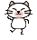

** Topic 2009年 10月**

●歯科診療の麻酔
病で歯がぐらぐらするなど、歯科治療を必要とするのは動物も人もおなじですね。
でも、歯科治療を行う場合、人と動物で大きな違いの1つに、麻酔の必要性ではないでしょうか？
動物の場合、『はい、あ～んして大きく口をあけてくださいね』と口を開けたり、まして『ちょっと、そのままじっとしててくださいね』と口を開けたまま静止など、難しいですよね。
そのため、抜歯をしたり、歯石除去や歯の修復。ほとんどの処置に全身麻酔が必要になります。
多く飼い主さんが、麻酔？と懸念されるのが事実ですが、安全にかつ確実な処置を受けるためには必要な麻酔です。
麻酔のリスクを最小限にするために、処置前には心機能のチェック、および血液検査をおこない内臓機能のチェックを行います。
当院での歯科治療には、必ず、気管チューブを挿入しての吸入麻酔を用いています。口の中の治療としては、最も安全な方法と自負しております。
麻酔技術の向上により、高齢の犬や猫でも、必要な歯科処置を受けることができるようになってきてます。
歯周病などのケアーは、年齢とともに必要になります。お年寄りが定期的に歯医者さんで加療が必要になるのと同じではないかと思います。
もう年だからと、諦めることなく、ぜひ、歯科治療受けてみてはいかがでしょうか？
『いつまでも、きれいなお口でおいしいご飯を！』
当院のモットーです。
。